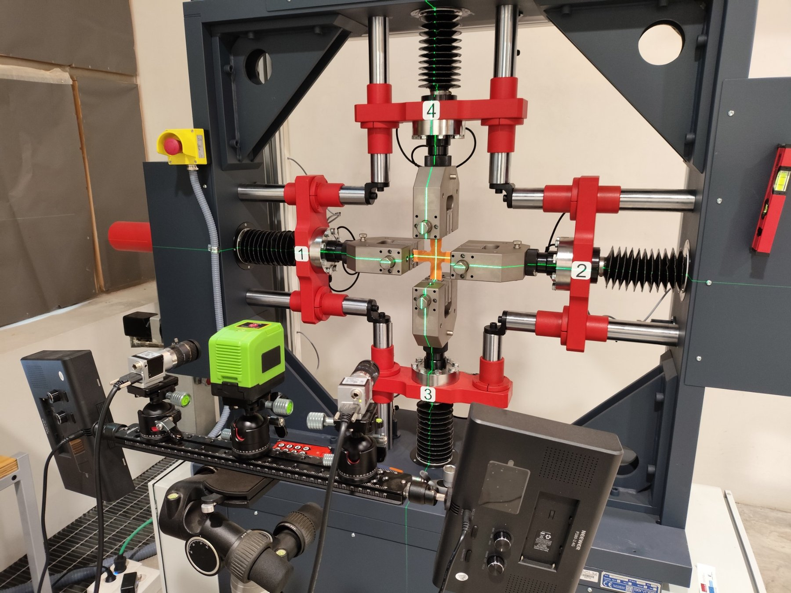
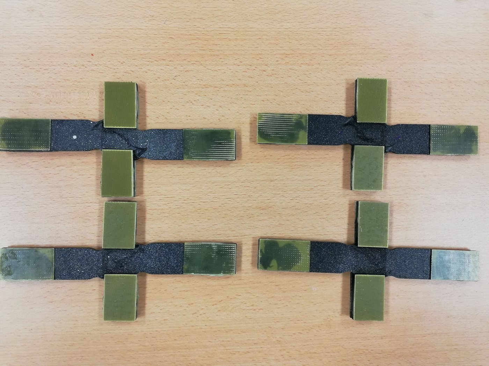
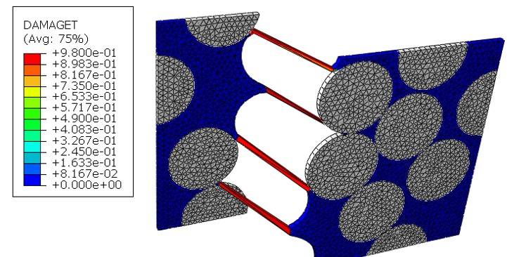
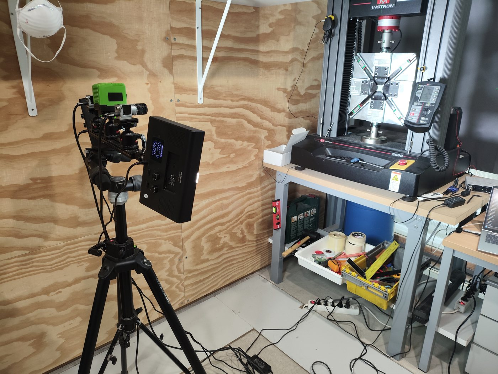
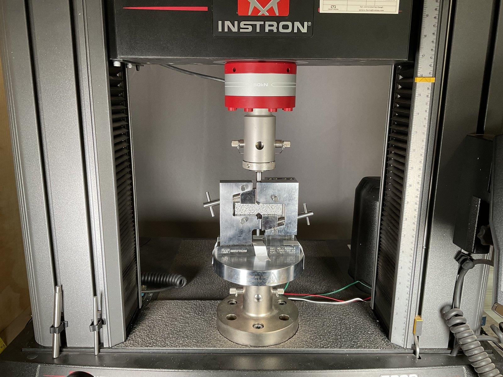
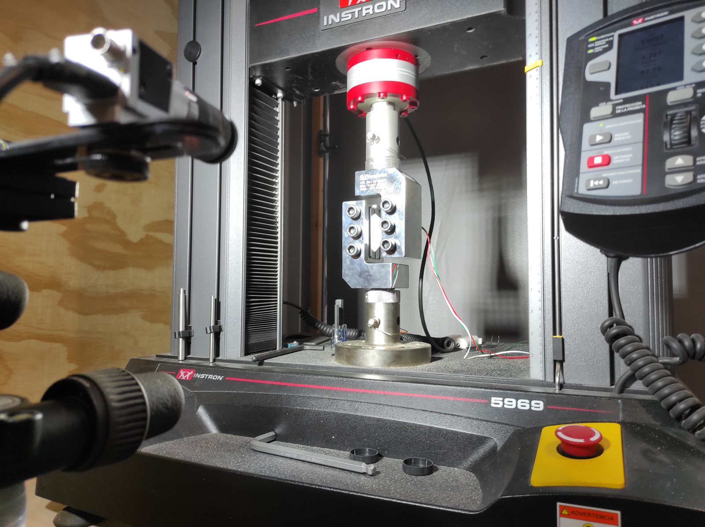
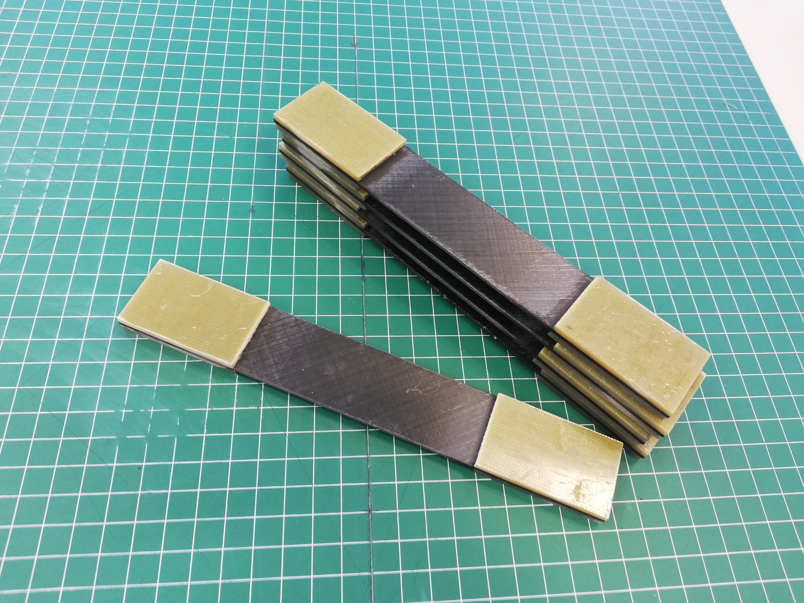
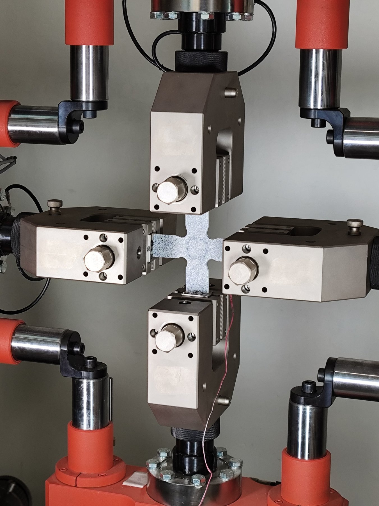

Mi investigación se desarrolla dentro del grupo COMES — Mecánica de los Medios Continuos, Ingeniería de Estructuras y de Materiales de la Universidad de Castilla-La Mancha. El hilo conductor es la respuesta mecánica de materiales y estructuras ante estados de carga complejos, combinando experimentación avanzada con modelado analítico y numérico.
Grupo de investigación COMES

Mecánica experimental
Ensayos multiaxiales
Diseño e interpretación de ensayos biaxiales y multiaxiales, especialmente con probetas cruciformes. Se estudian estados tracción–tracción, tracción–compresión y dominados por compresión, junto con la estabilidad y la medida de campos de deformación.
DIC · extensometría · probetas cruciformes · inestabilidades

Materiales compuestos
Respuesta no lineal de laminados CFRP
Estudio de laminados angle-ply simétricos cuya respuesta está fuertemente gobernada por la cortadura en el plano, incluyendo pseudo-ductilidad, reorientación de fibras, acumulación de daño y evolución de la rigidez.
CFRP angle-ply · pseudo-ductilidad · no linealidad · fallo

Mecánica computacional
Modelado de daño y fallo
Simulación por elementos finitos a distintas escalas, desde modelos representativos fibra–matriz hasta formulaciones de daño a escala de laminado. Se emplea Abaqus para analizar iniciación, degradación de rigidez, propagación de grietas y fallo.
Abaqus · FEM/XFEM · micro/mesoescala · daño progresivo

Medidas de campo completo
Medición e interpretación inversa
Integración de Correlación Digital de Imágenes con ensayos mecánicos para obtener campos heterogéneos de deformación, identificar fenómenos locales y apoyar la validación o identificación inversa de modelos.
DIC 2D/3D · campo completo · validación numérica
Caracterización a cortadura y normalización
Metodología destacada
Ensayo biaxial tracción–compresión · UNE 0074:2023
Una línea central es la determinación de propiedades de cortadura en el plano mediante un ensayo biaxial tracción–compresión con probeta cruciforme. La metodología desarrollada en COMES contribuyó a la UNE 0074:2023 y al proyecto de prueba de concepto BISHEAR.
El ensayo se compara con métodos convencionales de cortadura para analizar el estado tensión–deformación, la accesibilidad experimental y su utilidad en la caracterización avanzada de materiales compuestos.

Iosipescu · ASTM D5379/D5379M
Método de viga entallada en V empleado para determinar propiedades de cortadura en el plano de materiales compuestos.

V-notched rail shear · ASTM D7078/D7078M
Método de cortadura mediante raíles empleado como referencia para comparar la respuesta no lineal y la resistencia a cortadura.

Tracción ±45° · ASTM D3518/D3518M
Caracterización a tracción de un laminado ±45°, ampliamente utilizada para obtener la evolución tensión–deformación de cortadura en el plano.

Capacidad biaxial en el INAIA
El sistema Servosis de cuatro actuadores amplía el espacio de estados de carga biaxiales y las posibilidades de instrumentación de campo completo.
Capacidades experimentales y numéricas
Experimentales
Ensayos mecánicos cuasi-estáticos, carga biaxial, DIC, extensometría, probetas de material compuesto y diseño de ensayos estructurales.
Numéricas
Abaqus/FEA, mecánica no lineal, modelos de daño, pandeo y estabilidad, simulaciones micro/mesoescala.
Materiales
Laminados CFRP, sistemas poliméricos, nanocompuestos, estructuras ligeras y materiales seleccionados obtenidos por fabricación aditiva.
Colaboración
La investigación doctoral incluyó una estancia de tres meses en Ghent University en 2019 centrada en modelado micro y mesomecánico de daño en laminados angle-ply ante cargas uniaxiales y biaxiales.
Para propuestas de colaboración relacionadas con ensayo de materiales compuestos, modelado numérico o mecánica multiaxial, consulta la página de contacto.